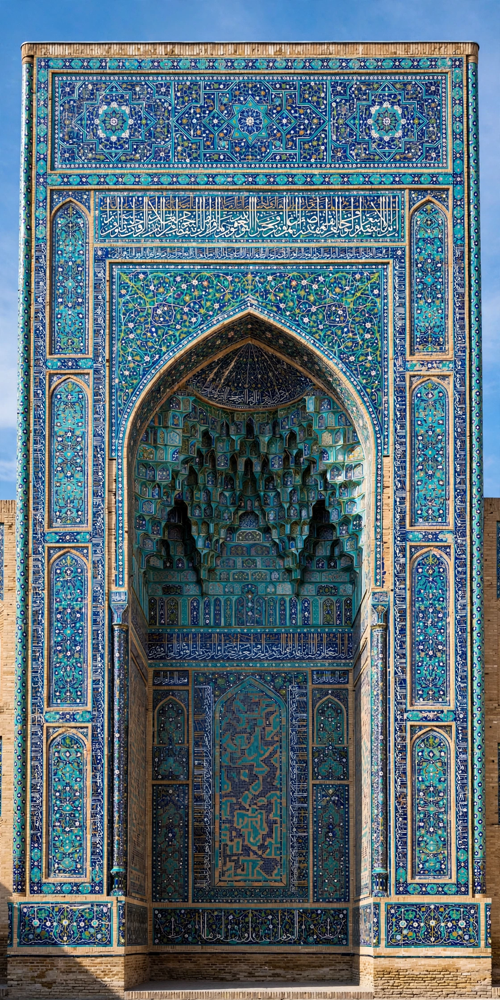

| Type | Architectural element |
| Region | Persia, Central Asia, Mughal India |
| Features | Rectangular frame, central iwan arch |
| Related | Iwan, mihrab, muqarnas |

A pishtaq (Persian: پیشطاق) is the formal rectangular frame around an arched entrance — an iwan — in Islamic, especially Persian and Central Asian, architecture. The pishtaq typically rises well above the roofline of the building behind it, forming a monumental portal that announces the entrance to a mosque, madrasa, caravanserai or tomb.
The pishtaq consists of a tall rectangular facade pierced by a large central arch, often recessed and crowned with muqarnas (stalactite vaulting) in its semi-dome. Its broad flat surface provides the principal field for decoration: glazed tile mosaics, calligraphic bands in Kufic or Thuluth script, geometric girih patterns and terracotta inlay. Flanking minaret-like turrets or engaged columns sometimes mark its corners.
The form developed in pre-Mongol Persia and reached its apogee under the Timurids in Samarkand and Bukhara, where enormous pishtaqs dominate the Registan square — those of the Ulugbek and Sher-Dor madrasas — and the Shah-i-Zinda necropolis. Safavid architects in Isfahan raised great pishtaqs at the Shah Mosque and the entrances to the covered bazaar. In Mughal India, the type appears in monumental gateways such as the Buland Darwaza at Fatehpur Sikri and the entrances of Humayun's Tomb and the Taj Mahal complex, where the great gate's pishtaq frames the mausoleum beyond.
Beyond structural support, the pishtaq serves as a threshold and a billboard: it signals the transition from public street to sacred or institutional interior, proclaims the patron's piety and power through inscription, and organises the facade of courtyard buildings in the four-iwan plan.